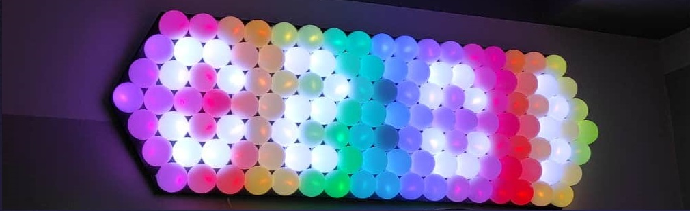

Nasze projekty
Zegar Cyfrowy
Autorzy: Alicja Szymańska, Mateusz Nawrot
W projekcie wykorzystano Arduino Pro mini i 128 diod RGB na taśmie. Posiada 8 kolorów, które zmieniają się co 10 sekund, a na koniec sekwencji zmian jednolitych kolorów, diody świecą w kolorach tęczy.